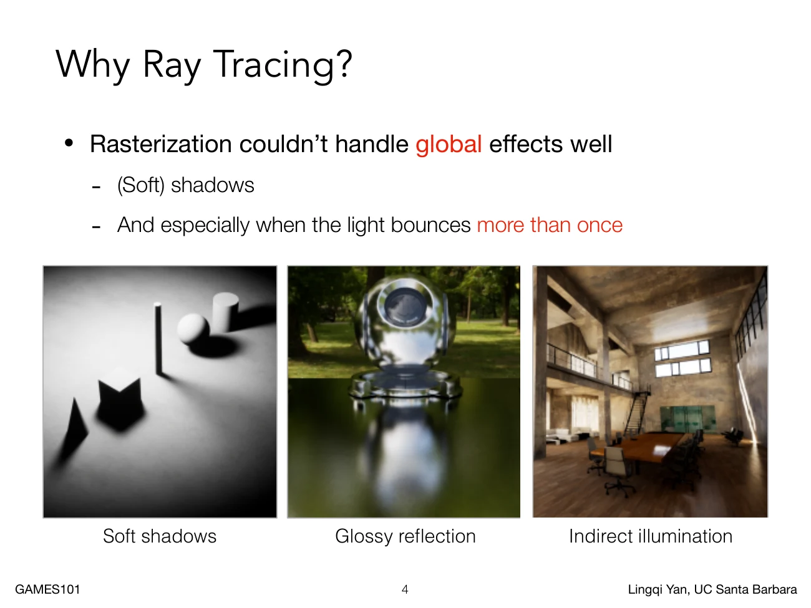
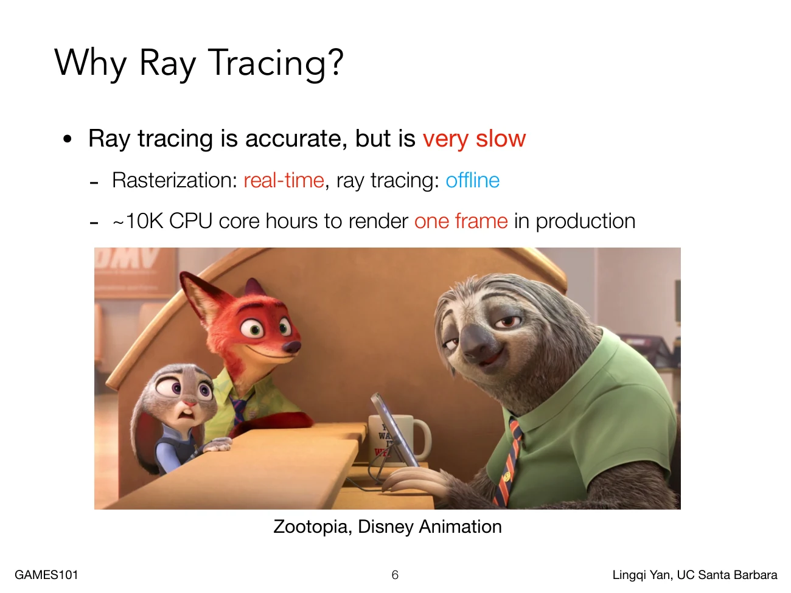
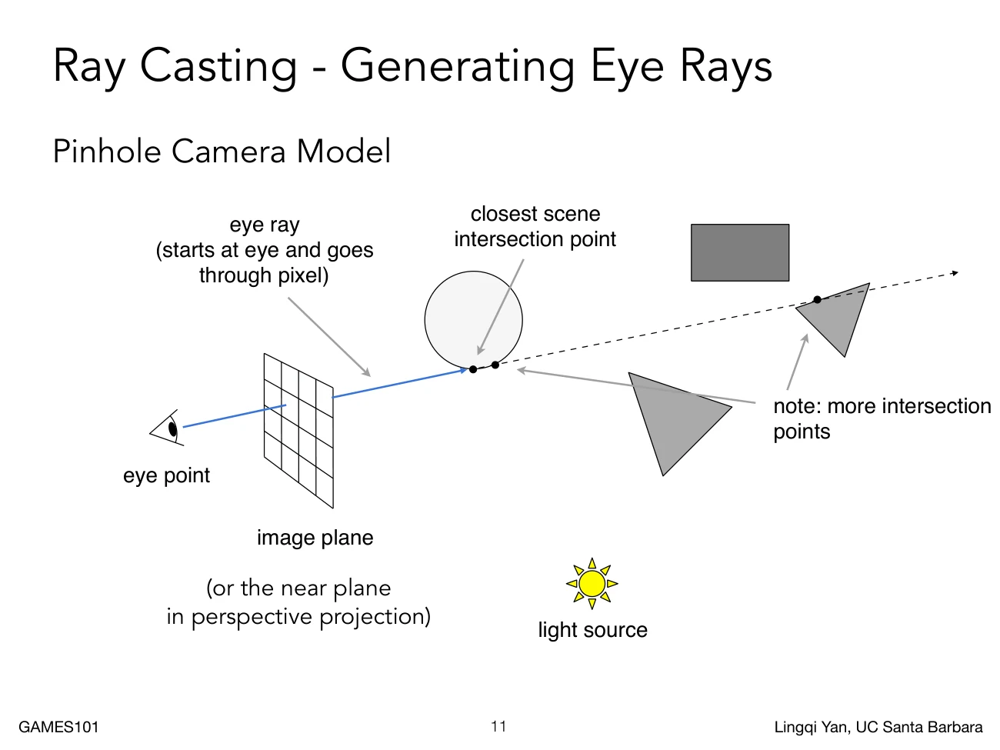
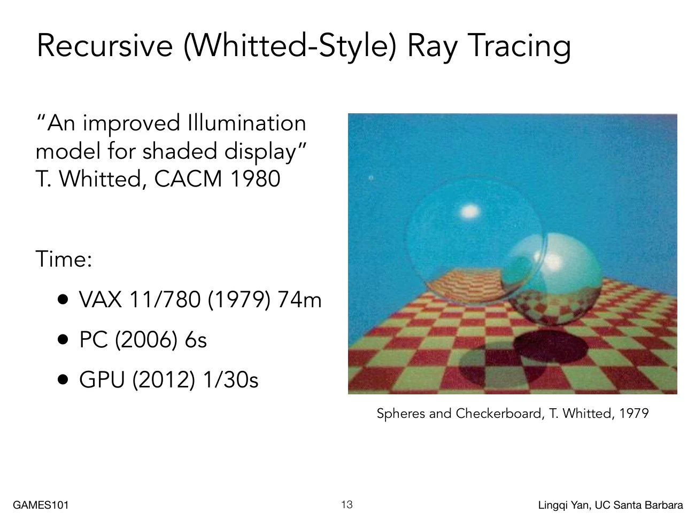
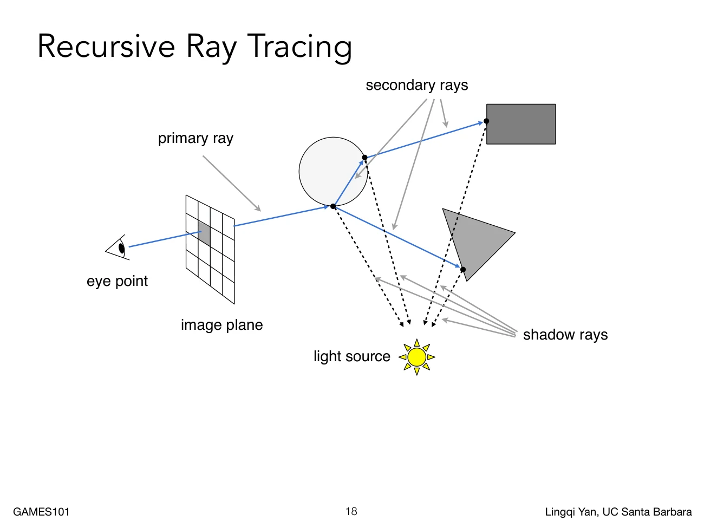
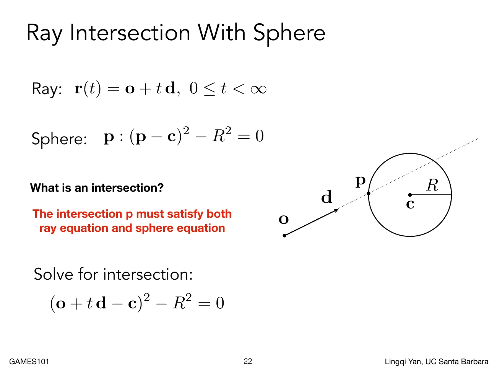
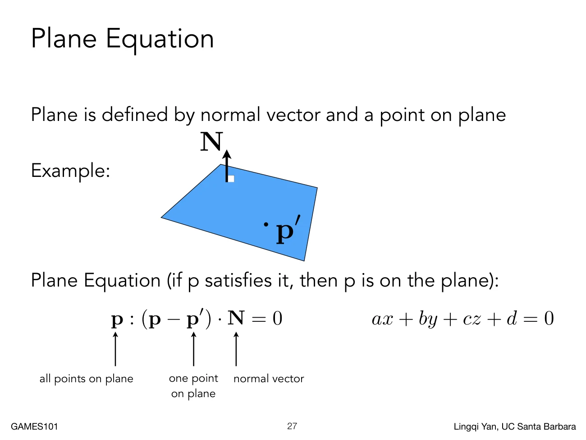
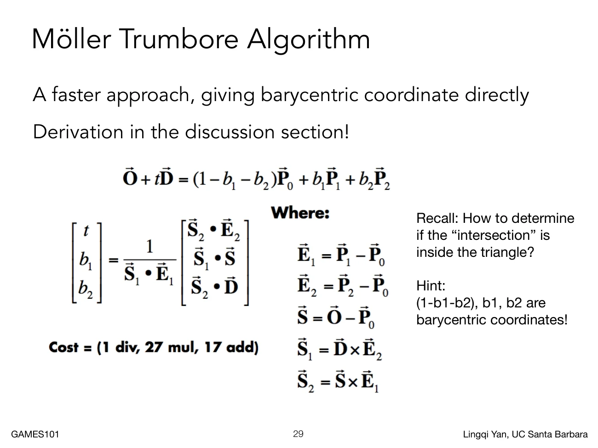
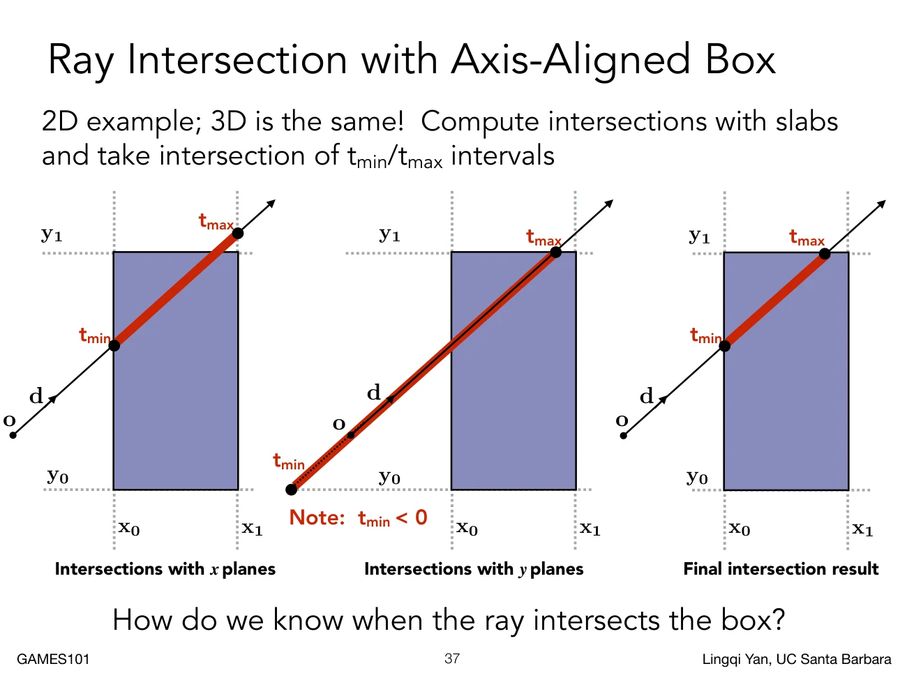
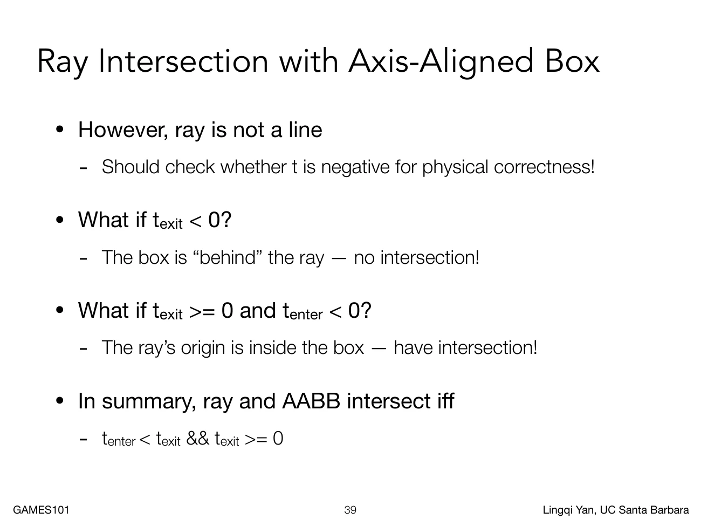

第 13 讲：光线追踪（一）——Whitted 风格光线追踪与求交
从光栅化的局限出发，理解光线投射、递归光线追踪，以及光线与球/平面/三角形/AABB 的求交计算
◆ 学完这一讲，你应该能
能说出光栅化在全局效果（软阴影、多次反弹、间接光照）上的不足，以及光线追踪为什么能解决这些问题
能写出光线的参数方程，并推导光线与球、平面、三角形（Möller–Trumbore）的求交公式
理解包围盒（AABB）加速求交的原理，能计算光线与 AABB 的 t_enter / t_exit 并判断相交
能描述 Whitted 风格递归光线追踪中 primary ray、secondary ray、shadow ray 的作用
能在 UE/Unity 中识别哪些效果属于光线追踪范畴（如 Lumen、Ray Tracing 阴影/反射）
核心结论速记
光栅化快但只能处理局部光照，软阴影、光泽反射、间接光照等全局效果需要光线追踪。
光线追踪的基本假设：光线沿直线传播、互不碰撞、光路可逆；因此可以从眼睛反向发射光线。
光线投射（Ray Casting）：每个像素发一条 eye ray，求最近交点，在交点做局部着色（如 Blinn-Phong），并向光源发 shadow ray 判断可见性。
Whitted 风格递归光线追踪：在交点处继续发射反射光线和折射光线，递归收集颜色，并乘以相应的 Fresnel/衰减系数。
光线与隐式曲面求交：将光线方程代入曲面方程，解出实数正根 t。
光线与三角形求交可分解为：先求与三角形所在平面的交点，再判断交点是否在三角形内；Möller–Trumbore 算法直接给出重心坐标，更快。
包围盒（AABB）加速：先用简单包围盒快速排除不相交的物体，只有光线与包围盒相交时才进一步测试内部图元。
光线与 AABB 求交：分别计算光线与三对 slab 的 t_min/t_max，取 t_enter = max{t_min}，t_exit = min{t_max}；若 t_enter < t_exit 且 t_exit >= 0，则相交。
011. 为什么需要光线追踪：光栅化搞不定的全局效果
光栅化（Rasterization）把三角形投影到屏幕、逐像素着色，速度很快，适合实时渲染。但它本质上是一个局部（local）着色模型：每个像素的颜色只取决于该点直接可见的光源和材质，很难处理光线在场景中多次反弹带来的效果。
课件列举了光栅化难以处理的几类全局效果（global effects）：
- 软阴影（soft shadows）：面光源产生的半影，需要知道光源上各点对 shading point 的可见性。
- 光泽反射（glossy reflection）：粗糙表面的模糊反射，需要采样多个反射方向。
- 间接光照（indirect illumination）：光线从墙面反弹后照亮背光面，即全局光照（global illumination）。
光栅化不是不能做这些，而是需要大量 hack（如 shadow map、SSR、SSAO），质量有限且容易出 bug。课件用《绝地求生》的截图说明光栅化效果可能出错。
光线追踪则准确但慢：课件提到迪士尼《疯狂动物城》一帧在生产环境中需要约 1 万 CPU 核心小时。光栅化是实时的，光线追踪早期是离线的。
直觉：光栅化是“从物体到屏幕”的投影，光线追踪是“从眼睛到场景”的搜索。前者快但只看一次，后者慢但能沿着光路反复查询。


常见坑
把“光线追踪”等同于“实时渲染”：早期光线追踪是离线渲染，实时需要硬件加速（RTX）或降噪。
认为光栅化完全不能做全局效果：现代引擎用屏幕空间技术近似，但物理准确性不如光线追踪。
UE / Unity 落地
UE5 的 Lumen 是软件/硬件光线追踪的混合全局光照方案，取代传统光照贴图；硬件光追（Ray Tracing）可开启更精确的反射和阴影。
Unity 的 HDRP 支持 Ray Tracing（DX12/Vulkan），用于反射、阴影、AO；内置管线则主要靠屏幕空间后处理近似。
022. 光线的基本假设与光线投射
课件先给出关于光线的三条（物理上并不完全正确、但图形学中够用的）假设：
- 光线沿直线传播（忽略波动性）。
- 光线之间互不碰撞（忽略干涉、衍射）。
- 光线从光源出发进入眼睛；但物理在路径反转下不变（光路可逆性，reciprocity），所以我们可以反过来从眼睛发射光线。
第三条是光线追踪的关键：我们不需要模拟从光源发出的无数光线，只需从相机（眼睛）出发，为每个像素发射一条eye ray，找到它首先击中的物体，然后计算该点的颜色。
光线投射（Ray Casting）（Appel 1968）的流程：
- 对每个像素，从眼睛出发穿过该像素中心发射一条光线；
- 求这条光线与场景中所有物体的最近交点；
- 在交点处做局部着色（例如 Blinn-Phong）；
- 向光源发射一条shadow ray，若被遮挡则处于阴影中。
课件用针孔相机模型（pinhole camera model）说明：眼睛是起点，成像平面（image plane，透视投影中的近平面）上的像素决定光线方向。注意一条光线可能与场景有多个交点，我们只取最近的（最小正 t）。

常见坑
忘记光路可逆性：从光源发射光线会导致大量光线浪费，正确做法是从眼睛发射。
求交时取了最大 t 或负 t：应取最小正 t，负 t 表示交点在眼睛后方。
UE / Unity 落地
UE 的 Ray Tracing 阴影本质上就是从 shading point 向光源发射 shadow ray 判断可见性。
Unity 的 Ray Tracing 反射也是从相机发射光线，命中后采样材质颜色。
033. Whitted 风格递归光线追踪
简单的光线投射只做局部着色，仍然无法处理反射和折射。Whitted（1980）提出递归光线追踪（recursive ray tracing）：在光线与物体的交点处，除了向光源发射 shadow ray 外，还继续发射反射光线（reflected ray）和折射光线（refracted ray），递归地收集这些方向上的颜色，再按材质系数混合。
课件把光线分为：
- primary ray：从眼睛出发的第一条光线；
- secondary ray：在交点处生成的反射/折射光线；
- shadow ray：指向光源、用于判断阴影的光线。
递归过程可以理解为：
color = local_shading(point, normal, view, light)
if material has reflection:
color += reflectivity * trace(reflected_ray, depth+1)
if material has refraction:
color += transmittance * trace(refracted_ray, depth+1)
实际实现必须设置最大递归深度，否则光线会在两个镜面之间无限反弹。课件也提到 Whitted 在 1979 年用 VAX 机器渲染一张图需要 74 分钟，而 2012 年 GPU 只需 30 秒，说明硬件进步对光线追踪的影响。


常见坑
不限制递归深度：镜面场景会导致无限递归或栈溢出，应设置 max depth（如 5~10）。
反射/折射方向计算错误：反射方向应为 \( \mathbf{d} - 2(\mathbf{d}\cdot\mathbf{n})\mathbf{n} \)，注意法线方向归一化。
UE / Unity 落地
UE 的 Ray Tracing 反射可设置最大反弹次数（Max Bounces），类似递归深度限制。
Unity HDRP 的 Ray Tracing 也有最大反射次数和降噪设置。
递归光线追踪伪代码（cpp）
Vec3 trace(Ray ray, int depth) {
Hit hit = intersectScene(ray);
if (!hit) return background;
Vec3 color = localShading(hit, ray);
if (depth < MAX_DEPTH) {
if (hit.material.reflective) {
Ray refl = reflectRay(ray, hit.normal, hit.point);
color += hit.material.kr * trace(refl, depth + 1);
}
if (hit.material.refractive) {
Ray refr = refractRay(ray, hit.normal, hit.point, hit.material.ior);
color += hit.material.kt * trace(refr, depth + 1);
}
}
return color;
}044. 光线与隐式曲面求交：球与一般曲面
光线用参数方程表示：
\[ \mathbf{r}(t) = \mathbf{o} + t\mathbf{d}, \quad 0 \le t < \infty \]
其中 \(\mathbf{o}\) 是起点，\(\mathbf{d}\) 是方向（通常归一化），\(t\) 是沿光线的“时间”参数。
与球求交：球心 \(\mathbf{c}\)、半径 \(R\)，球面方程为 \((\mathbf{p}-\mathbf{c})\cdot(\mathbf{p}-\mathbf{c}) = R^2\)。将 \(\mathbf{p} = \mathbf{r}(t)\) 代入：
\[ (\mathbf{o}+t\mathbf{d}-\mathbf{c})\cdot(\mathbf{o}+t\mathbf{d}-\mathbf{c}) = R^2 \]
展开得到关于 \(t\) 的一元二次方程：
\[ at^2 + bt + c = 0 \]
其中 \(a = \mathbf{d}\cdot\mathbf{d}\)，\(b = 2(\mathbf{o}-\mathbf{c})\cdot\mathbf{d}\)，\(c = (\mathbf{o}-\mathbf{c})\cdot(\mathbf{o}-\mathbf{c}) - R^2\)。解出 \(t = \frac{-b \pm \sqrt{b^2 - 4ac}}{2a}\)，取最小的正实数根。
与一般隐式曲面求交：曲面由 \(f(\mathbf{p}) = 0\) 定义，代入光线方程得 \(f(\mathbf{o}+t\mathbf{d}) = 0\)，解出所有实数正根，取最小者。
直觉：把光线“代入”曲面方程，就变成解一个关于 t 的方程；有几个交点就有几个根。

常见坑
忘记检查判别式 \(b^2-4ac\)：小于 0 表示无交点，等于 0 表示相切。
只取一个根：二次方程可能有两个正根，应取较小的正根（最近交点）。
方向向量未归一化：此时 \(a \neq 1\)，公式仍成立但 t 的物理意义不同，建议归一化。
UE / Unity 落地
UE 的 Sphere Trace 用于碰撞检测，本质也是光线与球求交的变体。
Unity 的 Physics.SphereCast 类似。
055. 光线与三角形求交：平面法 + 重心坐标
三角形是最基本的渲染图元，光线与三角形求交是光线追踪的核心操作。课件给出两种思路：
思路一：先求与平面的交点，再判断是否在三角形内。
平面由法线 \(\mathbf{N}\) 和平面上一点 \(\mathbf{p}_0\) 定义，平面方程为：
\[ (\mathbf{p} - \mathbf{p}_0)\cdot\mathbf{N} = 0 \]
将光线 \(\mathbf{p} = \mathbf{o} + t\mathbf{d}\) 代入：
\[ (\mathbf{o} + t\mathbf{d} - \mathbf{p}_0)\cdot\mathbf{N} = 0 \]
解得：
\[ t = \frac{(\mathbf{p}_0 - \mathbf{o})\cdot\mathbf{N}}{\mathbf{d}\cdot\mathbf{N}} \]
要求 \(t \ge 0\) 且 \(\mathbf{d}\cdot\mathbf{N} \ne 0\)（否则光线与平面平行）。得到交点后，用重心坐标或叉积判断点是否在三角形内。
思路二：Möller–Trumbore 算法（课件提到，直接给出重心坐标）：
该算法直接解出 \(t\) 和重心坐标 \((b_1, b_2)\)，若 \(b_1 \ge 0\)、\(b_2 \ge 0\)、\(b_1 + b_2 \le 1\) 且 \(t \ge 0\)，则交点在三角形内。它比“先平面后判断”更快，是工程中的标准做法。
直觉：平面求交是“先找到无限大平面上的点”，再问“这个点在不在三角形里”；Möller–Trumbore 则一步到位。


常见坑
光线与平面平行时 \(\mathbf{d}\cdot\mathbf{N}=0\)：会导致除零，应提前判断并返回无交点。
忘记检查 \(t \ge 0\)：可能得到三角形在光线背后的交点。
重心坐标判断条件写错：应为 \(b_1 \ge 0\)、\(b_2 \ge 0\)、\(b_1 + b_2 \le 1\)（对应顶点顺序可能不同，需确认）。
UE / Unity 落地
UE 的 Line Trace（射线检测）底层使用三角形求交，Möller–Trumbore 是常见实现。
Unity 的 Physics.Raycast 也基于类似几何求交。
Möller–Trumbore 算法核心（伪代码）（cpp）
bool rayTriangleIntersect(Ray ray, Triangle tri, float& t, float& b1, float& b2) {
Vec3 e1 = tri.v1 - tri.v0;
Vec3 e2 = tri.v2 - tri.v0;
Vec3 pvec = cross(ray.d, e2);
float det = dot(e1, pvec);
if (fabs(det) < EPS) return false; // 平行
float invDet = 1.0f / det;
Vec3 tvec = ray.o - tri.v0;
b1 = dot(tvec, pvec) * invDet;
if (b1 < 0 || b1 > 1) return false;
Vec3 qvec = cross(tvec, e1);
b2 = dot(ray.d, qvec) * invDet;
if (b2 < 0 || b1 + b2 > 1) return false;
t = dot(e2, qvec) * invDet;
return t > 0;
}066. 包围盒（AABB）加速：让求交变快
朴素光线追踪对每个像素、每条光线都要与场景中所有三角形求交，复杂度为 #像素 × #三角形 × #反弹次数，非常慢。课件用 70 万、2000 万三角形的场景说明性能挑战。
包围盒（Bounding Volume） 的思路：用一个简单的几何体把复杂物体包起来。如果光线连包围盒都没碰到，就不可能碰到物体；只有碰到包围盒，才进一步测试内部图元。
最常用的是轴对齐包围盒（Axis-Aligned Bounding Box, AABB）：盒子的每条边都平行于 x、y、z 轴。这样求交计算可以大幅简化。
光线与 AABB 求交：把 3D 盒子看成三对无限大的平板（slab）的交集。对每一对平板，计算光线进入和离开的 \(t_{\min}\) 和 \(t_{\max}\)（负值也保留）。则：
\[ t_{\text{enter}} = \max\{t_{\min}\}, \quad t_{\text{exit}} = \min\{t_{\max}\} \]
若 \(t_{\text{enter}} < t_{\text{exit}}\) 且 \(t_{\text{exit}} \ge 0\)，则光线与盒子相交。
- 若 \(t_{\text{exit}} < 0\)：盒子在光线背后，无交点。
- 若 \(t_{\text{exit}} \ge 0\) 且 \(t_{\text{enter}} < 0\)：光线起点在盒子内部，有交点。
为什么用轴对齐？ 对于垂直于 x 轴的平板，求交公式简化为 \(t = \frac{p_x - o_x}{d_x}\)，只需一次减法和一次除法，比一般平面求交快得多。


常见坑
忘记处理 t 为负的情况：t_exit < 0 表示盒子在光线背后，不应算相交。
只检查 t_enter < t_exit 而忽略 t_exit >= 0：可能把背后的盒子误判为相交。
光线方向分量为 0 时除以零：需要特殊处理（平行于 slab 时，若起点在 slab 外则无交点）。
UE / Unity 落地
UE 的 Nanite 和 Lumen 内部使用层次包围盒（BVH）加速光线求交。
Unity 的 Ray Tracing 加速结构（Acceleration Structure）也是基于 BVH。
光线与 AABB 求交（slab 方法）（cpp）
bool intersectAABB(Ray ray, AABB box, float& tEnter, float& tExit) {
tEnter = -INF; tExit = INF;
for (int i = 0; i < 3; ++i) {
if (fabs(ray.d[i]) < EPS) {
if (ray.o[i] < box.min[i] || ray.o[i] > box.max[i]) return false;
} else {
float t1 = (box.min[i] - ray.o[i]) / ray.d[i];
float t2 = (box.max[i] - ray.o[i]) / ray.d[i];
if (t1 > t2) swap(t1, t2);
tEnter = max(tEnter, t1);
tExit = min(tExit, t2);
if (tEnter > tExit) return false;
}
}
return tExit >= 0;
}引擎对照表
| 概念 / 效果 | Unreal Engine | Unity |
|---|---|---|
光线追踪阴影 | Ray Tracing Shadows（项目设置中开启） | HDRP Ray Tracing Shadows |
光线追踪反射 | Ray Tracing Reflections / Lumen Reflections | HDRP Ray Tracing Reflections |
全局光照 | Lumen（软件/硬件光追混合） | HDRP Ray Tracing GI / SSGI |
光线求交加速结构 | Nanite 的 BVH、Ray Tracing Acceleration Structure | Ray Tracing Acceleration Structure |
射线检测（游戏逻辑） | Line Trace / Sphere Trace | Physics.Raycast / SphereCast |
术语双语表
| English | 中文 | 说明 |
|---|---|---|
| Ray Tracing | 光线追踪 | 从眼睛发射光线并递归追踪光路，以计算全局光照效果。 |
| Ray Casting | 光线投射 | 每个像素发一条光线，求最近交点并做局部着色。 |
| Whitted-Style Ray Tracing | Whitted 风格光线追踪 | 在交点处递归发射反射/折射光线的经典光线追踪算法。 |
| Primary Ray | 主光线 | 从眼睛出发的第一条光线。 |
| Secondary Ray | 次级光线 | 在交点处生成的反射或折射光线。 |
| Shadow Ray | 阴影光线 | 从交点指向光源、用于判断可见性的光线。 |
| AABB | 轴对齐包围盒 | 边平行于坐标轴的包围盒，用于加速光线求交。 |
| Möller–Trumbore | Möller–Trumbore 算法 | 快速计算光线与三角形交点及重心坐标的算法。 |
| Barycentric Coordinates | 重心坐标 | 用三个顶点权重表示三角形内点的方法。 |
| Reciprocity | 光路可逆性 | 光线路径反转后物理规律不变，因此可从眼睛反向追踪。 |
课后练习
01 光栅化为什么难以处理软阴影和间接光照？光线追踪如何解决？
查看答案
提示：
从局部着色 vs 全局光路的角度思考。
光栅化是局部着色，每个像素只考虑直接光源，无法知道光源上各点的可见性（软阴影）或光线多次反弹后的能量（间接光照）。光线追踪从眼睛发射光线，在交点处可向光源发射 shadow ray 判断遮挡，并递归发射反射/折射光线收集全局光路，因此能自然处理这些效果。
02 光线起点为 \(\mathbf{o}=(0,0,0)\)，方向 \(\mathbf{d}=(0,0,-1)\)（已归一化），球心 \(\mathbf{c}=(0,0,-5)\)，半径 \(R=1\)。求最近交点对应的 t。
查看答案
提示：
代入二次方程，取最小正根。
方程：\((\mathbf{o}+t\mathbf{d}-\mathbf{c})\cdot(\mathbf{o}+t\mathbf{d}-\mathbf{c})=R^2\)。\(\mathbf{o}-\mathbf{c}=(0,0,5)\)，\(\mathbf{d}=(0,0,-1)\)。\(a=1\)，\(b=2(0,0,5)\cdot(0,0,-1)=-10\)，\(c=25-1=24\)。判别式 \(b^2-4ac=100-96=4\)。\(t=(10\pm 2)/2\)，得 \(t=4\) 或 \(t=6\)。最近交点为 \(t=4\)。
03 光线与 AABB 求交时，为什么取 \(t_{\text{enter}}=\max\{t_{\min}\}\)、\(t_{\text{exit}}=\min\{t_{\max}\}\)？
查看答案
提示：
从“进入所有 slab 才算进入盒子”和“离开任一 slab 就离开盒子”理解。
盒子是三对 slab 的交集。光线必须同时进入三对 slab 才算进入盒子，因此进入时间是各对 slab 进入时间的最大值；而只要离开任意一对 slab 就离开了盒子，因此离开时间是各对 slab 离开时间的最小值。
04 在 UE 或 Unity 中，哪些功能使用了光线追踪？请举出至少两个，并说明它们对应本讲的哪个概念。
查看答案
提示：
考虑阴影、反射、全局光照。
例如 UE 的 Ray Tracing Shadows 对应 shadow ray；Ray Tracing Reflections 对应反射光线；Lumen 的全局光照对应间接光照的递归光线追踪。Unity HDRP 的 Ray Tracing 也提供阴影、反射、GI。